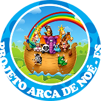
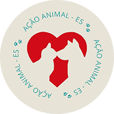

ONG's de proteção animal
Veja as principais ONG's que estão disponíveis em Serra:
SOPAES – Sociedade Protetora dos Animais do Espírito Santo. Apoie a SOPAES e ajude os animais. Juntos, fazemos a diferença!
Saiba mais
Descubra a Ação Animal ES, que protege nossos amigos de quatro patas e busca fazer cumprir leis municipais em prol da causa animal. Conheça nossa missão!
Saiba mais
Descubra a Ação Animal ES, que protege nossos amigos de quatro patas e busca fazer cumprir leis municipais em prol da causa animal. Conheça nossa missão!
Saiba maisSomos um abrigo em Serra que resgata, cuida e encaminha animais de rua para um novo lar. Seu apoio ajuda a transformar vidas. Faça parte dessa causa!
Saiba maisVocê também quer fazer parte desta grande equipe de ONG's? Cadastre sua ONG no Programa ARCA e amplie seu impacto! Divulgue animais para adoção, participe de campanhas e conecte-se a pessoas dispostas a ajudar. Juntos, podemos transformar vidas!
Cadastrar minha ONG